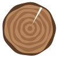
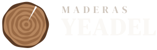
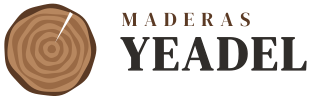
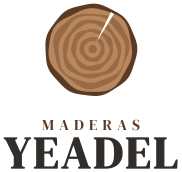
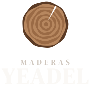
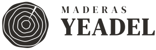
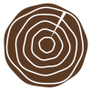
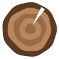

Maderas Yeadel
La sección de un tronco de nogal: anillos de crecimiento, la médula descentrada y una fenda, como la madera real. Es la propuesta B tal como te gustó, ya pasada a logo de verdad: letras en trazados, fenda recortada (vale sobre cualquier fondo) y todas sus versiones.
Falta una decisión: ¿gris oscuro o gris claro?
Así abriría la web con cada uno. El anillo, las letras y el nogal son los mismos; cambia el campo.

Carpintería en Córdoba, con precio antes de que venga nadie.
Pide tu precioCarpintería en Córdoba, con precio antes de que venga nadie.
Pide tu precioOscuro: más contundente y la madera resalta más. Claro: más aire y más cercano. Recomiendo oscuro en la portada y en el cierre y claro en las secciones de contenido: así se usan los dos y la web tiene ritmo de campos (lo que gustó en Ana, Melendo y J.R.).
El logo

horizontal · sobre oscuro
horizontal · sobre claro
vertical · sobre blanco
vertical · sobre oscuroA una tinta
Para grabar en madera, vinilo de furgoneta, sello, factura en blanco y negro. Los anillos son surcos: vale con láser o fresadora.

grafito
símbolo · nogalTamaños y aire
A 16-32 px los 11 anillos se empastan: el favicon lleva 5 y la fenda más gruesa. Alrededor del logo, como mínimo el alto de la Y de YEADEL libre por cada lado.

16 pxColor
#302D2A
#8B8580
#E6E2DC
#FAF8F5
#5B3A24
#9A6A45
#B7875F
| Grises | Cálidos, una sola familia con la madera: nunca un gris azulado al lado. |
| Nogal | El acento. Texto sobre nogal, siempre en cal (contraste 9,5:1). El nogal claro y la albura, solo en el anillo y en detalles: nogal claro sobre grafito da 2,95:1 y no vale para texto; para rótulos sobre oscuro, #C49A72. |
| Madera | La textura de madera vive en el símbolo y en las fotos de trabajos reales. Nada de fondos de madera en toda la página: compiten con el texto. |
Letra
| Títulos | Puertas que cierran como el primer día |
| Texto | Hanken Grotesk: legible y neutra, para que la serif y la madera lleven el carácter. |
| Rótulo | MADERAS · ARMARIOS · PUERTAS |